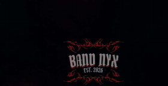

Band Nyx · Vijayawada, Andhra Pradesh
Live Band in Vijayawada
Band Nyx is a six-piece live band based in Vijayawada, available for weddings, college festivals, corporate events, cultural shows and private concerts. We perform rock and pop-driven sets in Telugu, Hindi and English.
Vijayawada-based event band
Our home base is Vijayawada, so local organizers can work directly with the band while planning the date, venue, audience and setlist. We also travel across Andhra Pradesh and Telangana for suitable events.
Band Nyx was formed in 2026 and has performed more than 50 live shows. Our history includes Battle of Bands appearances at KL University and SRM University AP, along with college festivals, cultural events, cafés, resorts, weddings and private concerts.
Events we perform in Vijayawada
- College festivals and campus concerts: energetic, crowd-led sets for student audiences.
- Wedding receptions and sangeet: Telugu, Hindi and English songs selected around the couple and guests.
- Corporate events: organized performance planning for annual days, brand events and company celebrations.
- Private shows: birthdays, cultural gatherings, venue nights and ticketed concerts.
Music and lineup
- Rock, pop and high-energy live arrangements
- Telugu, Hindi and English songs
- Setlists tailored to your audience and event type
- Six musicians covering vocals, guitars, bass, drums and keys
Meet the full Band Nyx lineup or explore our music and live set style.
Why organizers choose Band Nyx
- 50+ live performances
- Multiple Battle of Bands wins
- Flexible setlists for different audiences
- Direct communication with the band during planning
- Experience at college, wedding, corporate and private events
How to book a live band in Vijayawada
Send the event date, Vijayawada venue or area, event type, expected audience and preferred music. We will confirm availability and discuss the lineup, performance duration, setlist and production requirements.
Call: +91 79950 22614 or +91 90597 53108
Instagram: @band.nyx
Booking details: Book Band Nyx
Frequently asked questions
Is Band Nyx based in Vijayawada?
Yes. Band Nyx is based in Vijayawada, Andhra Pradesh, and also travels for events in other cities.
What kinds of events can Band Nyx perform at?
We perform at college fests, weddings, corporate events, cultural shows, private concerts, cafés and resorts.
Which languages does the band perform in?
Our live sets can include Telugu, Hindi and English songs, based on the event and audience.
How much does it cost to hire Band Nyx?
Pricing depends on the event date, location, performance duration, production setup and travel. Contact us with those details for an accurate quote.